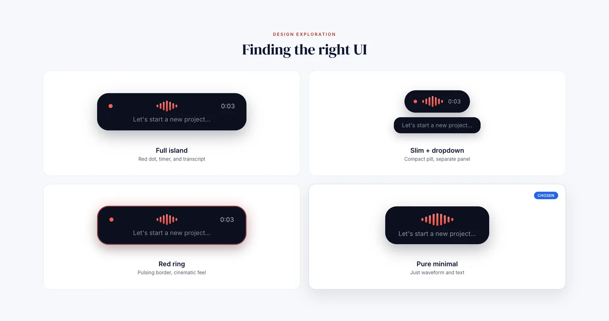
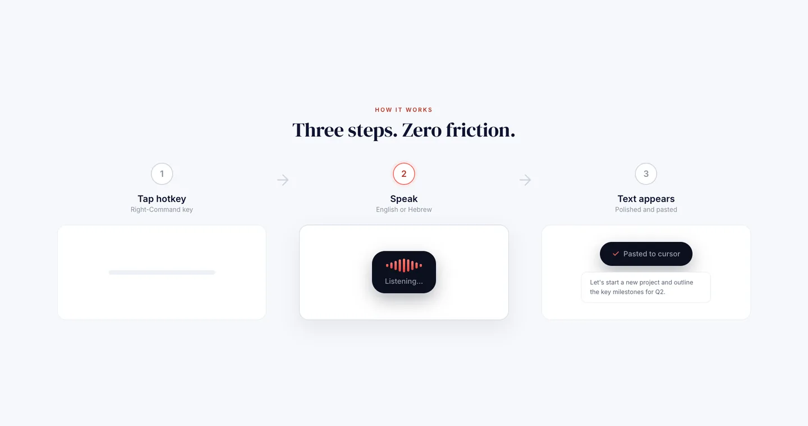
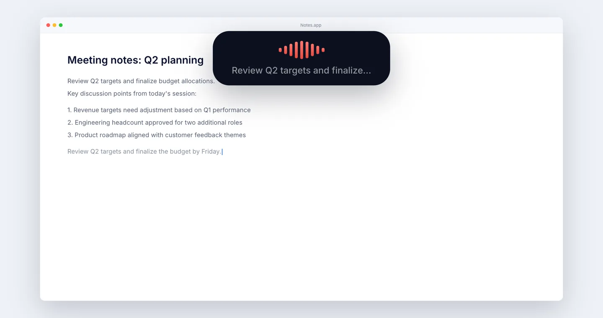

Voice typing for Mac
macOS makes you pick English or Hebrew. I write both, often inside one sentence, so Shhh listens from the menu bar, works out which language is which while you talk, and pastes into whatever app is in front. Grammar is cleaned up once you stop, not mid-thought.

What annoyed me
Switching dictation language mid-sentence, which is exactly when you cannot spare the attention.
What I decided
The grammar pass waits until you stop talking. Correcting mid-flow guesses at a sentence that is not finished, and gets it wrong often enough to be worse.
What I built
A Python core with a Swift menu bar app on top, streaming to Google Cloud Speech-to-Text over gRPC so words land while you are still speaking.
Scope
English and Hebrew, no mode switchLanguage detected as you speak
Words appear while you talkA streaming gRPC connection carries them as you speak
Lands in the frontmost appA global hotkey anywhere, pasted through AppleScript
Grammar cleaned on a finished thoughtThe pass runs once dictation stops


